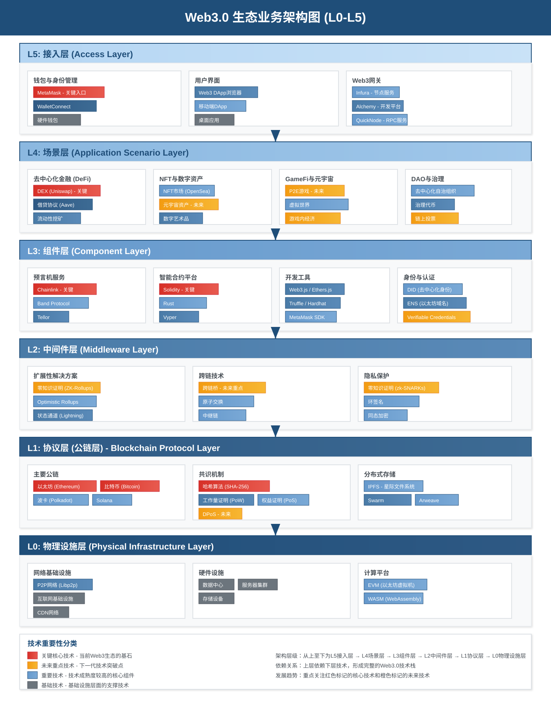

麦肯锡咨询风格 - 专业技术架构分析
版本: 2024年9月 | 适用场景: 战略咨询、投资决策、高管汇报

图1: Web3.0生态系统分层架构 - 从L5接入层到L0物理设施层的完整技术栈
战略定位：用户与Web3.0生态系统的直接接触点，是流量聚集和用户体验的关键层级。
战略定位：具体的商业应用场景，是Web3.0价值实现和商业模式创新的核心层级。
战略定位：开发工具和基础组件，是Web3.0开发者生态和技术创新的支撑层级。
战略定位：性能优化和互操作性解决方案，是Web3.0技术突破和扩展的关键层级。
战略定位：区块链核心协议，是整个Web3.0生态系统的基础和价值锚定。
战略定位：硬件和网络基础设施，是支撑整个Web3.0生态系统运行的物理基础。
| 技术 | 层级 | 战略价值 | 市场地位 | 投资建议 |
|---|---|---|---|---|
| 以太坊 (Ethereum) | L1 | 智能合约平台领导者 | 主导地位 | 长期持有 |
| 比特币 (Bitcoin) | L1 | 价值存储和转移基础 | 龙头地位 | 战略配置 |
| 哈希算法 | L1 | 区块链安全数学基础 | 基础标准 | 技术研发 |
| Chainlink | L3 | 预言机网络标准 | 领导地位 | 重点关注 |
| Solidity | L3 | 智能合约开发标准 | 主流语言 | 生态投资 |
| MetaMask | L5 | Web3入口控制 | 用户入口 | 流量价值 |
| 技术 | 层级 | 发展潜力 | 成熟度 | 投资时机 |
|---|---|---|---|---|
| 零知识证明 (ZK) | L2 | 革命性突破 | 快速发展 | 积极布局 |
| 跨链桥 | L2 | 互操作性关键 | 技术完善中 | 谨慎投资 |
| 元宇宙资产 | L4 | 巨大市场空间 | 早期阶段 | 长期布局 |
| P2E游戏 | L4 | 商业模式创新 | 概念验证 | 选择性投资 |
| 链上投票 | L4 | 治理标准化 | 实验阶段 | 技术储备 |
本文档采用麦肯锡咨询风格设计 | 适用于商务演示和战略分析 | 版本更新：2024年9月
建议定期更新技术分类和市场分析以保持时效性